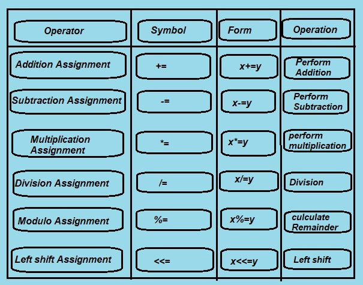

C Language support the following assignment operators:
1. Simple Assignment Operator (e.g. =)
2. Compound Assignment Operators (e.g. +=, -=, /=, %=, *=, etc.)
1. Simple Assignment Operator (=):
There is only one simple assignment operator in C programming, which is =.
It is used to assign the value of the right-hand side operand to the left-hand side operand. In simple terms, it assigns the value or result on the right side to the variable on the left side.
The assignment operator is used to assign values (such as integers, strings, or arrays) to variables.
General Syntax for Assignment Operator:
Left Operand = Right Operand
Example of Simple Assignment Operator:
#include<stdio.h>
void main() {
int x = 10;
int y = x; /* value of x is assigned to y */
printf("x = %d\n" , x); /* x = ? */
printf("y = %d\n" , y); /* y = ? */
}
Output
x = 10
y = 10
2. Compound Assignment or Short hand Operator

1.Addition Assignment Operator +=
The += operator is used to perform the addition of two variables or operands.
It adds the right operand to the left operand and then assigns the result to the left operand.
For example: x += y
This is equivalent to: x = x + y
#include <stdio.h>
void main() {
int x = 10;
int y = 10;
x += y; /* similar to x = x + y */
printf("x = %d\n" , x); /* what is x now? */
Output:
x=20
Program Explanation:
Here, we show how the += operator behaves in C programming. Two integer variables, x and y are declared and initialized with 10.
The program's main action is captured in a single line: x += y;. This operator is a short hand for x = x + y; meaning it adds the value of y to x then stores the result back in x. At this point, both x and y are 10.
So by applying the += operation, y's value (10) is added to x's (also 10) in order to produce a different value for x, which is 20.
The program then gives a output of the updated value of x through the printf function the resulting output is x = 20, confirming that the operation works.
This was a good way to demonstrate the plus equal operator in C which adds and replaces that value to achieve a compact method of doing a thing that makes it a little more efficient.
2.Subtraction Assignment Operator -=
-= Operator is used to perform subtraction of two variable or operands.
the left operand becomes equal to the subtraction of the right operand and left operand.
e.g p-=q
which is equivalent to p=p-q
Example of -= operator
/* C program to demonstrate -= operator */
#include <stdio.h>
void main() {
int p = 10;
int q = 3;
p -= q; /* similar to p = p-q */
printf("p = %d\n" , p); /* p=? */
}
Output:
x=7
Program Explanation:
Initially, the program defines two integer variables p and q and initializes them with values 10 and 3 respectively. Since these two values will be involved in the operation, it indicates an initialization up to the operation stage.
The next operation is performed: p -= q;. The first part of the statement remembers the original value of p from which the value of q is to be subtracted and the result is stored back into the variable p. p was assigned 10 and q was assigned 3, so p is now evaluated as 10 - 3 = 7.
We will use the printf method to display the value of p. The output 7 is shown on the screen, which informs the user that p has been updated after the subtraction.
Thus, the program shows an example of how to use this operator in C. First, it subtracts the value of q from p, updating the value of p and then it prints the new value. This facilitates the coding process as it allows subtraction and assignment to be carried out in one line.
3.Multiplication Assignment Operator *=
*= Operator is used to perform Multiplication of two variable or operands.
the left operand or variable becomes equal to the multiplication of the right operand and left operand.
e.g a*=b
which is equivalent to a=a*b
here the value of a is multiplied with the value of b and the final result or calculated result is stored or assigned to a itself.
C proram using *= Operator
/* C program using *= Operator */
#include <stdio.h>
void main() {
int x= 10;
int y = 3;
x *= y; /* similar to x = x*y */
printf("x = %d\n" , x); // x=?
}
Output:
x=30
Program Explanation:
The program begins with declaring and initializing two integer variables named x and y. The declared values assigned to them are 10 to x and 3 to y. This pair is what the program uses in the multiplication operations.
The next command, line, x *= y;, used the multiply assign operation on the given operands. This is the perfect representation of the statement when using the shortcut of x = x * y;.
In such situations, value x should be multiplied with that of y and should be stored back into x. In this case, x is 10, and y is 3.
The output of this expression resolves to 30, which subsequently changes the value of x to this newly obtained product.
And finally, the program will output the new value of x via printf. The outcome displayed is x = 30 so that the multiplication operation really works and the updated value of x is unambiguously indicated.
4.Division Assignment Operator /=
/= Operator is used to perform Division of two variable or operands. The division Assignment operator is an assignment operator, which divides the value of the variable by a given numeric value, which is specified on the right side of the operator.
This operator combines the two operations. First, it divides the values, and then it assigns to the variable.the left operand or variable becomes equal to the division of the right operand and left operand.
Here is some example how to use the division assignment operator in C Programing.
e.g a/=b
which is equivalent to a=a/b
here the value of a divides with the value of b and the final result or calculated result is stored or assigned to the variable aitself.
C proram using /= Operator
/* C program using /= Operator */
#include <stdio.h>
void main() {
int a= 8;
int b = 2;
a/= b; /* similar to a = a/b */
printf("a = %d\n" , a); // a=?
}
Output:
a=4
Program Explanation:
In the given Program the variables a and b are declared as integer and assigned values to them i.e a=8 and b=2.
a/=b which is similar to a=a/b this means in our program the instruction divides the value of a=8 by the b=2 and assign the result value to a itself hence value of a becomes 4.
5.Modulus or Modulo Assignment Operator %= The modulus Assignment operator is an assignment operator which is used to calculate the remainder of the division operation. This operator divides the value of a variable by the specified value given on the right side of the operator. After, it assigns the remainder to the variable.
Here is some example how to use the Modulus assignment operator in C Programing.
e.g a%=b
which is equivalent to a=a%b
here the value of a divides with the value of b and the final result or calculated result i.e remainder is stored or assigned to the variable a itself.
C proram using %= Operator
/* C program using %= Operator */
#include <stdio.h>
void main() {
int a= 7;
int b = 2;
a%= b; /* similar to a = a%b */
printf("a = %d\n" , a); // a=?
}
Output:
a=1
Program Explanation:
The program begins with the standard procedure of including the standard input output header file #include <stdio.h>. Only after this, the printing function printf can be used for displaying output.
Two integer variables are declared and initialized inside the main() function:
int a = 7; - 7 is stored in the variable a.
int b =2; - 2 is stored in the variable b.
The %= operator is then used:
a %= b;
This is an abbreviation of a = a % b. The remainder is computed by the % operator, which is a modulus operation.
Here, it gives the remainder on dividing a with b, which is 7 % 2. Well, dividing 7 with 2 goes 3 times with a carryover of 1, so the remainder is 1.
That value is assigned back to a; thus, now a becomes 1.
Finally, the printf function displays a=1 on the screen
6.Left Shift Assignment Operator <<=
The Left shift Assignment operator is an assignment operator in C which is used to shift or moves all the bit in first variable to the left by the number of places specified in the second variable.
Here is some example how to use the Left shift assignment operator in C Programing.
e.g a<<=b
which is equivalent to a=a<<b
here the bits in variable a moves to the left by the number of places specified by the value of variable b
C proram using left shift <<= Operator
/* C program using left shift <<= Operator */
#include <stdio.h>
void main() {
int a= 7; /* in binary 7 =0111 */
int b = 1;
a<<= b; /* similar to a = a<<b */
printf("a = %d\n" , a); // a=?
}
Output:
a=14
Program Explanation:
This C program is a demonstration of the operation of the left-shift assignment operator (<<=). Here are two integer variables: a, which is initialized to 7, and b, which is initialized to 1. Now, note that the left shift operator operates on the binary representation of a number.
In this case, the number 7 is represented by the binary number 0111. By applying a <<= b, we now bring it to writing it this way, that is, a = a << b, and depending what it means, we are shifting bits of a to the left by b positions.
Now, 0111 shifted once to the left gives us 1110, or in decimal terms, 14. So variable a contains this value now. Finally, the printf statement prints out this new value of a.
This kind of operation is very useful when it comes to low-level bit manipulation, especially useful application where performance matters like in embedded systems or game development.
7.Right Shift Assignment Operator >>=
The Right shift Assignment operator is an assignment operator in C which is used to shift or moves all the bit in first variable to the right by the number of places(value) specified in the second variable.
Here is some example how to use the Right shift assignment operator in C Programing.
e.g a>>=b
which is equivalent to a=a>>b
here the bits in variable a moves to the right by the number of places specified by the value of variable b
C proram using left shift >>= Operator
/* C program using left shift >>= Operator */
#include <stdio.h>
void main() {
int a= 7; /* in binary 7 =0111 */
int b = 1;
a>>= b; /* similar to a = a>>b */
printf("a = %d\n" , a); // a=?
}
Output:
a=3
Program Explanation:
This C program illustrates the usage of the right shift assignment operator (>>=) in C. It opens by declaring and creating two integer variables: a has been assigned a value of 7 and b of 1. 7 in binary form is exhibited as 0111.
a >>= b means that we will perform right shifting on the binary digits of a for any given number of places (set by b).
Thus moving the bits of 0111 one place right will give us 0011 in binary which is 3 in decimal. Thus after this operation, a becomes 3. Then using printf, it prints the new value of a.
Right-shift operations are those that allow us to divide quickly a number by powers of two in low-level programming environments bitwise manipulations.